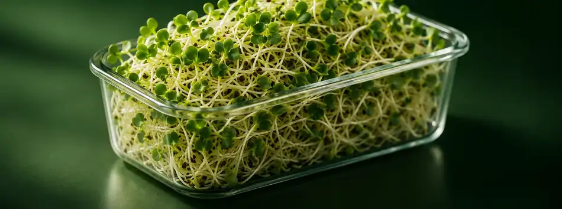

Freshness you can see.
Care in every batch.
Grown to orderNo pre-made inventory.
Small batchesPersonally tended and harvested.
London delivery£2.30 by arrangement.
Free collectionAt an agreed time.


Nothing complicated. Just broccoli seeds, a carefully managed growing process and the time every batch needs to develop.
See the growing journey ↗Follow the journey of broccoli sprouts. Every batch develops at its own pace.

Our product is young broccoli sprouts, with fine pale stems and tiny paired green leaves.
Each batch is prepared close to an agreed collection or delivery date.
Keep refrigerated and follow the storage and use-by advice supplied with your order.
Free collection by appointment, or personal delivery in selected London areas for £2.30.
Week Supply: 200g for £9.99. Family Pack: 500g for £16.99.
Small-batch broccoli sprouts, with a direct line to the grower and collection or delivery that works for you.
One-time, weekly or fortnightly. Arranged directly with you.

Regular orders are arranged manually. Automatic subscriptions aren't enabled yet.
Choose your pack, a preferred date and collection or delivery. We'll confirm everything directly through WhatsApp.
Broccoli sprouts require at least six days to grow; please request seven days ahead. No payment or confirmed booking is made through this form.
At least six days for broccoli, with a seven-day minimum advance request to allow a small buffer.
Yes, collection is free and available by arrangement on any day, within a mutually agreed window.
Usually Tuesday, Wednesday and Thursday in selected London areas, for £2.30 per order.
Yes, we can discuss regular supply via WhatsApp. Automated subscriptions are not available yet.
These are broccoli sprouts: young germinated plants, with fine pale stems and small green seed leaves.